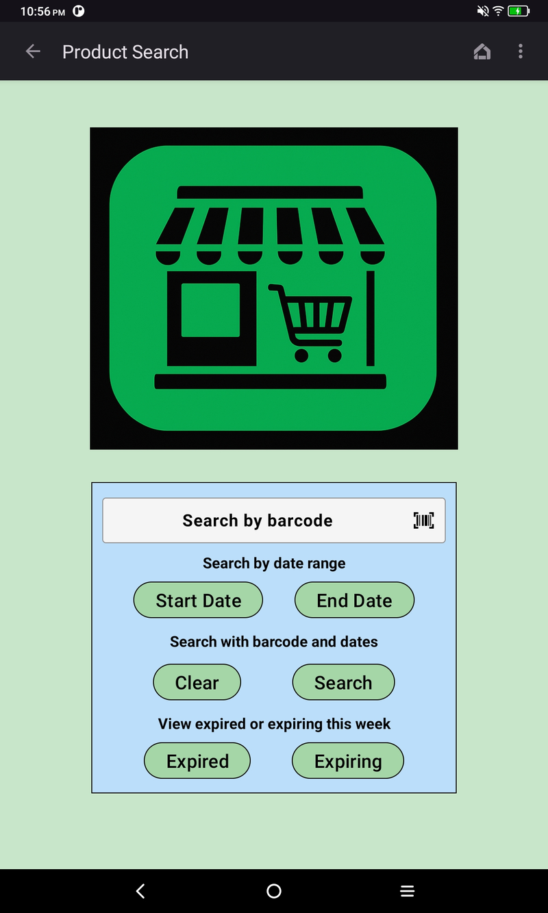
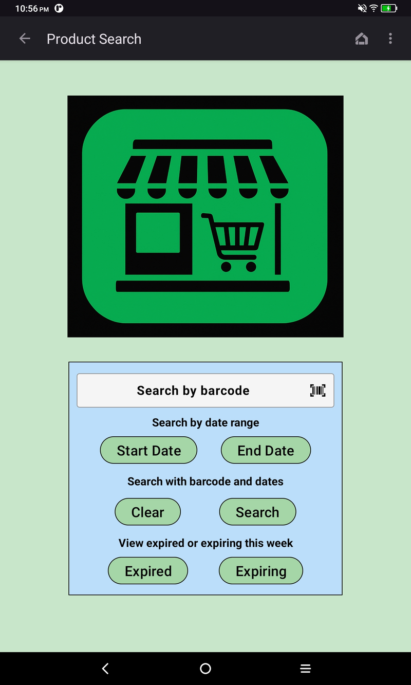
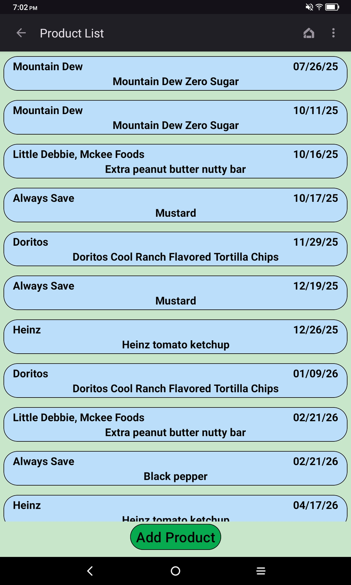
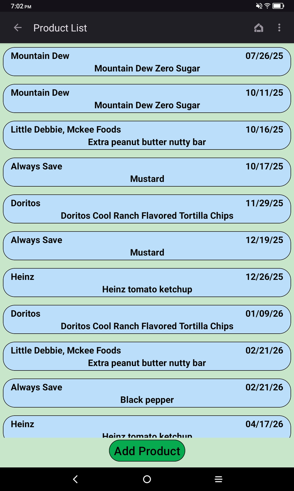

Best By Manager
Keep food safe and shelves stocked with Best By Manager üßä ‚Äì expiration tracking made simple.
What Can Best By Manager Do?
- Scan barcodes to identify items fast (Open Food Facts lookup)
- Add products with brand, weight, category, quantity, and expiration
- Warning alarms are automatically set when new products are added
- Early warning alarms trigger 7-days before expiration by toggling the bell on the expiration field
- Expiration reminders and auto-clear reminders when quantity hits 0
- Discard tracking (quantity + optional reason) with reporting totals
- Reports filtered by barcode, date range, expiration status, or employee
- Camera photos stored locally for easy product identification
- Local-only storage (no accounts, no cloud sync, no analytics)
How It Works
- Install the app and create the first user → becomes admin automatically
- Add inventory via “Add Product” or by scanning a barcode
- Enable early warning by tapping the bell icon on the expiration field
- Record discards for expired/damaged items (optional reason)
- Run reports and share summaries via Android clipboard
App Preview
 

 



Download
Note: Android will prompt you once to allow installs from unknown sources (sideload).
The first account created becomes the administrator, gaining control of user management and reports.
Learn more: Repository